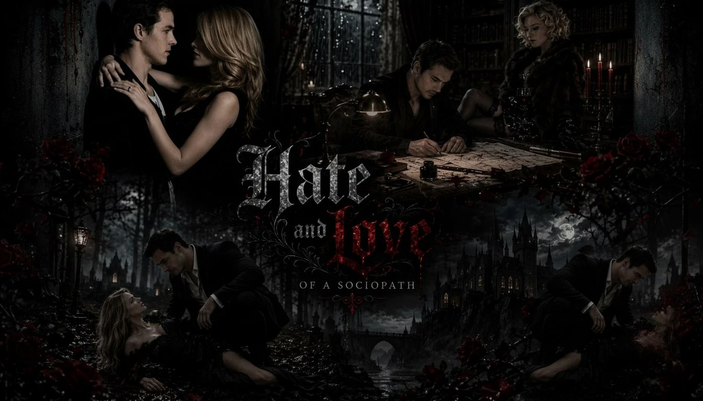
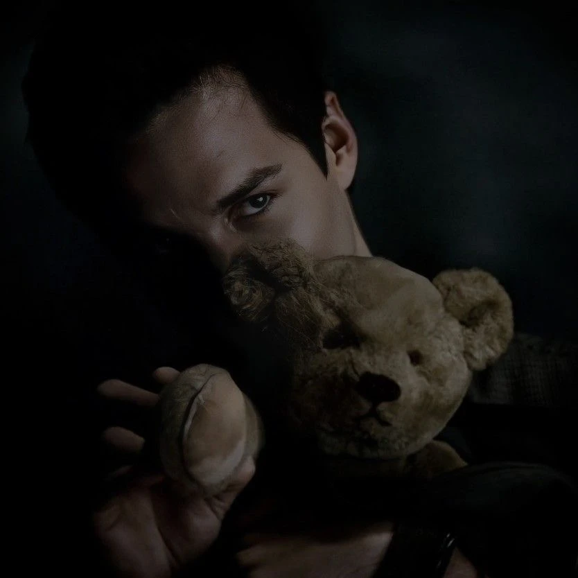
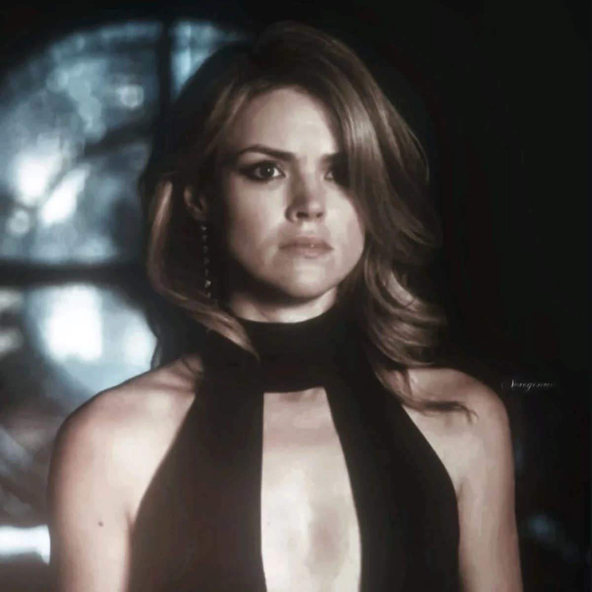

Hate and love of sociopath
Алира — девушка, потерявшая себя. Не помнит, кто она есть. Не понимает, что с ней творится. Она верит каждому слову своих близких людей. Надеясь, что они желают ей добра. Кай — глава ковена. Всячески старается искупить свою прошлую вину. Чтобы поднять клан с колен, ему нужен первородный еретик.
Hate and love of sociopath
Анкеты персонажей
Анкеты
♤ 𝐍𝐚𝐦𝐞: 𝐊𝐚𝐢 𝐏𝐚𝐫𝐤𝐞𝐫
♤ 𝐀𝐠𝐞: 𝟐𝟐 (𝟓𝟖)
♤ 𝐂𝐥𝐚𝐧: 𝐓𝐡𝐞 𝐠𝐞𝐦𝐢𝐧𝐢 𝐜𝐨𝐯𝐞𝐧
♤ 𝐀𝐟𝐟𝐢𝐥𝐢𝐚𝐭𝐢𝐨𝐧: 𝐏𝐚𝐫𝐤𝐞𝐫 𝐟𝐚𝐦𝐢𝐥𝐲
♤ 𝐓𝐰𝐢𝐧𝐬: 𝐉𝐨𝐬𝐞𝐭𝐭𝐞
♤ 𝐀𝐠𝐞: 𝟐𝟐 (𝟓𝟖)
♤ 𝐂𝐥𝐚𝐧: 𝐓𝐡𝐞 𝐠𝐞𝐦𝐢𝐧𝐢 𝐜𝐨𝐯𝐞𝐧
♤ 𝐀𝐟𝐟𝐢𝐥𝐢𝐚𝐭𝐢𝐨𝐧: 𝐏𝐚𝐫𝐤𝐞𝐫 𝐟𝐚𝐦𝐢𝐥𝐲
♤ 𝐓𝐰𝐢𝐧𝐬: 𝐉𝐨𝐬𝐞𝐭𝐭𝐞

❦𝐍𝐚𝐦𝐞: Алира (Лира, Ли)
❦𝐒𝐮𝐫𝐧𝐚𝐦𝐞: Паркер (девичья Сальваторе)
❦𝐀𝐠𝐞: (обратилась в 17) 165 в 2013 / 184 в 2030 / 303 в 2143.
❦𝐏𝐚𝐫𝐞𝐧𝐭𝐬: Лилиан Сальваторе. Джузеппе Сальваторе.
❦𝐇𝐮𝐬𝐛𝐚𝐧𝐝: Кай Паркер
❦𝐒𝐮𝐫𝐧𝐚𝐦𝐞: Паркер (девичья Сальваторе)
❦𝐀𝐠𝐞: (обратилась в 17) 165 в 2013 / 184 в 2030 / 303 в 2143.
❦𝐏𝐚𝐫𝐞𝐧𝐭𝐬: Лилиан Сальваторе. Джузеппе Сальваторе.
❦𝐇𝐮𝐬𝐛𝐚𝐧𝐝: Кай Паркер

Цикл «Круг небесных печатей.»
Глава 1: I Hate you.
Тюремный мир. Что мы знаем о нем? Это своего рода адская петля, которая повторяется изо дня в день, вынуждая каторжника сожалеть о своём поступке. А у кого отсутствуют такие чувства, как сожаление и вина, те всеми способами стараются не сойти с ума. Тюремные миры держит под контролем Клан Близнецов. Они создают и излавливают тех, кто нарушил законы. Это не просто Ковен, а само правосудие. Даже среди магии должны быть свои порядки.
Яркая вспышка. Два тела камнем упали на землю. Это оказались парень и девушка — Алира Беннет и Кай Паркер. Молодая ведьма очнулась быстрее, чем ведьмак. Первое, что она почувствовала, — нестерпимую головную боль. Веки словно налились свинцом, сил пошевелиться не было вовсе. Создавалось такое ощущение, будто она не спала больше трёх суток и любая попытка открыть глаза заканчивается тем, что она снова проваливается во тьму. Собрав остаток сил, она приподнялась, жмурясь от слепящего солнца, и осмотрелась по сторонам.
Взору девушки предстал огромный лес Мистик Фоллс. Все выглядело настолько реалистично, что не сразу распознаешь в этом месте тюрьму. Яркие лучи солнца пробиваются сквозь крону деревьев, но они не греют. Если посмотреть с точки зрения логики, лес должен наполняться самыми разнообразными звуками. Но как бы Ли ни напрягала слух, вокруг нее стояла мертвая тишина: ни дуновения ветерка, ни пения птиц и даже жужжания насекомых. В ее голове мелькнули воспоминания того вечера, и сразу стало понятно, где она. Это персональный «ад» Малакая Паркера. Здесь ты проживаешь десятое мая 1994 года всегда. Этот день наложил отпечаток на историю Ковена. Все повторилось спустя 1170 лет. Только у предка Паркера не оказалось такой поддержки, которая была у Кая.
Облокотившись спиной о дерево, она на секунду прикрыла глаза, унимая головокружение. Черное вечернее платье было все в пыли и местами порвано. Согнув ноги, девушка сморщилась от легкой боли: колени горели и жгли. Видимо, при падении на песок с них содрало кожу. Алира старалась вспомнить, как она тут очутилась. Все началось с того, что она получила приглашение на свадьбу к своим знакомым. Джозетт и Аларик решили узаконить свои отношения. Вроде ничего не предвещало беды. Вечер проходил гладко и тихо. Но в момент клятвы невесты произошел несчастный случай. Ее близнец Малакай Паркер за годы своего заточения решил преподнести подарок своей близняшке, убив не только ее, но и весь свой Ковен. Сестрам Беннет ничего не оставалось, кроме как заточить Кая обратно в его тюрьму. Во время ритуала что-то пошло не так, и Паркер смог увлечь с собой младшую Беннет.
Неожиданно для нее самой взгляд зацепился за то, что она совсем не хотела видеть: в метре от нее лежал Кай. Видимо, он был без сознания. Девушке еще повезло, что она очнулась первой. Паркер лежал на траве в вечернем костюме, лицом вниз. Когда-то белый воротник рубашки оказался пропитан багровой кровью. Это была не чужая, а его собственная. Чтобы погубить весь свой Клан, ему пришлось убить себя. Умирает лидер — умрут все. Только вот поправочка: Кай выпил кровь вампира, обратив себя в еретика.
Беннет медленно поднялась на ноги и попыталась уйти от этого места подальше. Пройдя всего пару шагов, замерла. В той стороне, где лежал Кай, появились слабые звуки. Он стал приходить в себя. Прячась за дерево, она обхватила себя руками. Было непривычно слышать посторонние звуки в этой тишине. Паника накатывала на нее волной, а сердце стучало с бешеной скоростью. Она понимала: нужно успокоиться, иначе он на ней сейчас отыграется за то, что оказался здесь снова.
— Не может быть!Девушка вздрогнула, услышав утробный рык, полный гнева и боли. Его пальцы впились в землю, а голубые глаза стали почти синими. Жилки на шее запульсировали. Один его вид вызывал волну мурашек по всему телу. Мечущий из стороны в сторону глава бывшего Клана сейчас был похож на агрессивного хищника в клетке. Правая сторона лица оказалась в кровоподтёках , а шея вся перепачкана следами алой жидкости. Но на самом Паркере не было каких-либо увечий. Он сам мог их кому угодно нанести. В испуге, что Кай может заметить ее, девушка подхватила подол платья, вползая в тень. Колено отдало невыносимой болью, создавая уйму проблем для ухода от разъярённого социопата. Она не сможет уйти, не то чтоб убежать. Придется сидеть тихо и надеется, что Кай не заметит или хотя бы не вспомнит о ее существовании.
— Как мне помнится... — глаза Кая сверкнуни неистовой злобой. — Я здесь должен быть не один.После его слов девушка почувствовала острую боль в позвоночнике. Из ее уст вырвался приглушенный стон, который она поспешила прикрыть рукой.
— Алира. Ты где-то здесь.Протянул имя Паркер. Подняв руку в воздух, он сжал ее в кулак, отчего по телу девушки прошла новая волна боли. Он применял на нее свою магию. На губах расплылась самодовольная улыбка от подавляемого крика его соседки по камере. Ли опустила глаза всего на секунду. А когда вернула взгляд на место, Кая уже не было. Беннет потеряла его из виду. И тут же тонкие пальцы с перстнями обвились вокруг шеи, сдавливая.
— Что ты сделаешь? Убьешь? — прохрипела она, смотря в эти синие глаза, получающие удовольствие.
— Убить? Хм, прекрасное предложение. — прижав ее к дереву, Кай провел пальцем по скуле. — Но тогда я лишу себя единственной игрушки. А мне нужно развлечение на это время. Охота. Пока твоя сестренка радуется и живет спокойной жизнью, ты будешь страдать. Куда бы ни убежала — я найду тебя. А теперь беги.
Его рука разжалась, освобождая от цепкой хватки. Переступив с ноги на ногу, девушка с вызовом посмотрела ему в глаза. Было отчетливо ясно, что Паркер издевается над ней, внушая хотя бы малую долю возможности на спасение.
— Никуда я не побегу. Делай что хочешь. Ведь это я виновата, что ты здесь. Раз удержать тебя здесь, нужно оставить совсем невинного человека. Пусть оно так и будет.
— Хорошо. Ты сделала свой выбор. — на его лице появилась яркая улыбка. — Знаешь, что самое противное и больное?Он сжал запястье со всей силы, так что послышался хруст, а его ладони засветились красным светом. Через несколько секунд ее тело расслабилось, ноги подкосились, и она уже лежала на земле. Беннет лишь хватило сил взглянуть на самодовольное лицо Паркера. В ней не осталось ни капли магии. Он вытянул ее, оставив после себя синяки на белоснежной коже.
— Я буду повторять эти действия раз за разом, пока ты не будешь молить свою сестрицу вернуть меня назад. Магия вернется к тебе, а потом отправится ко мне. Снову и снова. Я без понятия, сколько ты так продержишься.
Ведьма мало что понимала в таком состоянии, да и силуэт видела размыто. Кажется, Кай что-то чертил на песке в хорошем расположении духа после употребления магии. А вот она, наоборот, погрязла во тьму.
✧ ✧ ✧
Неразборчивые картинки, словно короткометражка, всплывают перед глазами. Ли ворочается от каждой вспышки. Она попросту никак не может уловить расплывчатые силуэты. Двое мужчин перед ней, но разобрать лица не выходит. Невыносимая боль пронзает тело, вытаскивая из морока сна. Первым, что она слышит, — грохот тарелок. Озираясь по сторонам спальни, она пытается сфокусировать взгляд хоть на чем-то. Слишком светлые обои раздражают и без того больные глаза. Девушка поморщилась от ослепительного солнца, которое с такой настырностью пробивалось сквозь зашторенные окна. Ее внимание привлек стянутый на запястье бинт. Привстав с постели, она придержала голову руками, унимая головокружение. Малакай позаботился не только о собственноручно нанесенных травмах, но и тех, что девушка получила при падении. «Это все он сделал.» — промелькнула мысль в голове. Поднявшись с кровати, Ли направилась в сторону шума. Холодный взгляд Кая тут же задержался на ней.
— Поглощение магии тебя утомило? — пройдя в кухню, сказала ведьма чуть хрипловатым голосом.
— Оп, ты очнулась. Прелесть. — в его словах так и слышалась нотка озорства и веселья, а улыбка растянулась до ушей. — Можем продолжить? — проткнув вилкой кусочек мяса, отправил себе в рот.
Что-то в его поведении Ли настораживало. Тело было настолько напряженным, а любое действие — нервным. Словно Паркер был готов броситься на нее при первой же ошибке.
— Знаешь что? Я, пожалуй, пойду. Спасибо тебе за оказанную помощь.
— Стоять. — вытянув руку в ее сторону, он усадил ее на стул. — Разве так благодарят? Я нес тебя через весь лес. А ты уйти намерена. Не хорошо.
— Что ты еще делал? Стесняюсь спросить.
Кай сдавленно усмехнулся:
— Хоть меня и называют психом, но я социопат. За личные границы не перехожу. Да я и то магию не забираю у бессознательного человека, не говоря уж об этом.
— Раз мы это выяснили, делать мне здесь больше нечего. Поэтому я пойду. Дела ждут.
На лице Паркера заиграла ехидная улыбка. Поднявшись со своего места, медленными шагами он стал приближаться, обходя сзади.
— А почему я должен отпускать единственную игрушку? — его дыхание опалило кожу рядом с ухом. — Ты, наверно, плохо расслышала последние слова, после того, как вырубилась. Если я буду забирать у тебя магию, то в скором времени ты умрешь. Печальный конец для такой молодой ведьмы.
— Тогда ты останешься без своей игрушки. Мне же лучше.
Кай рассмеялся, а его пальцы стали медленно касаться шеи.
— Твое жизнь в моих руках. Захочу — убью. Захочу — оставлю в живых.
Он малыми дозами поглощал из нее магию.
— Отпусти!
Волна слабости снова накрыла ее тело. В эту секунду Беннет удалось оттолкнуть Паркера и выбежать на улицу. Она не знала, куда ей бежать. Терять магию для нее было пыткой. Она с самого рождения только поглощала, накапливая от других, все для того, чтобы ощущать себя полноценной ведьмой. Стоя на дороге, девушка решила, что с этой минуты Кай без борьбы не получит ни единой капли. Превозмогая боль в теле, она уверенно двинулась в сторону углового дома по улице Авеню.
— Invisique...
Единственное, что оставалось у нее в запасе, — это скрыть себя на время. На улице девушка услышала мелодичный голос Паркера, зовущий ее. Тихо приоткрыв дверь первого дома, зашла внутрь. Темнота кругом, а голос за пределами дома действует на нервы. Ли помнила, как Паркер рассказывал про детскую забаву — прятки. Самая любимая игра для него. Правда, последний раз эти игрушки закончились кровавой трагедией. Даже сейчас Кай специально дает ей время сообразить. Взмахнув двумя пальцами, она сдвинула комод к дверям, создавая отвлекающий маневр. Это его не остановит, но затормозит.
— Лира, ведьмочка. Я знаю, ты где-то здесь. Свою магию ты не скроешь.Ручка двери дернулась, но не поддалась.
— Блонди. Ты серьезно?
Ли скривила носик от того, как он обозвал ее. Шепот Кая — и комод отлетает к стене, но девушка успевает увернуться. Дверь скрипуче отворилась. Тяжелые ботинки ступили на паркет. Он прошел в середину комнаты, так и не видя Алиру.
— Fes Matos Aculex! — перед ним стояла Беннет и самодовольно улыбалась. Она загнала его в нужный капкан. — Incendio!Вокруг Паркера моментально вспыхнул огонь, беря ведьмака в кольцо.
— Неплохо, — хмыкнул он. — Только это меня не удержит.
— Я знаю. Но это даст мне время убежать и скрыться.
Девушка подошла к Каю. Единственное, что их разделяло, — это огонь.
— Глупышка, ты не представляешь, что я тогда с тобой сделаю! — голос стал надрывным, грубым.
— Прости, милый. Мне пора.
Схватив подготовленную заранее сумку, она поспешила выйти из дома. Захлопнув дверь, девушка услышала крик Кая:
— Вернись! Алира Беннет, я найду тебя здесь, так же, как и твою сестру! Сделаю тоже самое, что и с ней!От этого вопля пробирало изнутри. На секунду Лира задумалась: «Может не надо? Нет. Беги.»
✧ ✧ ✧
Сколько уже прошло времени? Неизвестно. Лира блуждала по лесу, идя просто вперед. Она не разбирала дорогу, ноги сплетались, не слушались, а веки становились тяжелыми. Ей очень хотелось спать. Сил не оставалось никаких. Хотелось упасть на траву и ждать свою участь в лице Кая Паркера.
— Нельзя. Пока не найду безопасное место, — устало пробормотала она самой себе.
Солнце уже село, и наступила кромешная тьма. На глаза Лире попались два больших камня, которые оказались повалены друг на друга. Наложив на него скрывающее заклинание, она забралась внутрь и тут же уснула.
Малакай Паркер скучающе ждал ослабления магического кольца. С каждой минутой пламя становилось тише, а терпения ведьмака — меньше.
— Жертва всегда должна думать, что впереди, — он ухмыльнулся, и через несколько секунд пламя исчезло. — Но я чертовски голоден.Распаковав конфету, он отправил себе в рот.
Среди ночи девушка услышала странный шорох. Решив не испытывать судьбу, она вышла из укрытия и направилась дальше. Вдруг кто-то толкнул ее в спину, и Алира покатилась вниз с холма. Глухой стук — и голова пошла кругом.
— Кровь... — выдавила она хриплым голосом.
— Выспалась? — Кай вышел из темноты, словно хищник. Он опустился на колени рядом с ней. Изумрудные глаза Ли не сходили с его хищного взгляда.
— Твое сердечко бьется слишком быстро. Шумно. Холодные пальцы легли на запястье. Кай аккуратно затронул губами кровь. По щекам поползли вены, а глаза потемнели, показывая его вампирское лицо.
— Не может... — Лира вжалась в дерево. Она совсем забыла, что Кай теперь еретик.
— Самое ужасное в их жизни — это то, что тебя мучает жажда. Представляешь? Паркер рассуждал об этом, как о повседневных вещах. Чеширская улыбка с безумным и нервным взглядом. Кай постепенно нависал над ней.
— Большое упущение, ведьмочка... Ты не будешь противиться?
В синих глазах читалось непонимание.
— Почему же?
В ладони девушки лежала заостренная ветка, которую она теперь благополучно воткнула в шею Паркера. Он отпустил ее, сгибаясь пополам. Девушка ринулась бежать, подбирая подол платья.
Выпрямившись, Кай выдернул ветку. Рана на глазах стала регенерировать. Хрустнув шеей, он вытянул ладонь:
— Motes!Ли словно магнитом притянуло к нему.
— Отпусти! — она вырывалась, колотила руками в грудь.
— О, Боже. — Кай завел ее запястья над головой. — Тихо. Я постараюсь сделать это нежнее. Лучше не двигайся, чтобы клыки не вошли глубоко.
Девушка замычала. Ей было странно слышать такие слова от социопата. «Он переживает, что сделает больно?»
— О, обещаю. До потери сознания не доведу.
Мягкие губы коснулись нежной кожи. Несколько секунд промедления — и мертвая тишина леса сменилась женским криком боли.
— Потерпи чуть-чуть, — прошептал он. Кай ощутил на своей спине впивающиеся ногти. Он не видел ее лица, поглощая кровь маленькими глотками. Как долго он сдерживал себя. Взгляд Ли стал пустым. Внезапно из-под ее ладоней пошло красное свечение. Взмахнув рукой, она тут же припечатала мужчину к дереву.
— Ух, как разворачиваются события! — на одном дыхании выговорил Паркер.
Беннет приложила лоскуток платья к горлу.
— Дразнишь? — подмигнул он.
— С чего бы?
— Ой, только не надо говорить, что тебе не понравилось. Слух.
Милая улыбочка расплылась на его лице.
— Давай учитывать, что я человек. И мне нужен отдых, еда и вода.
— Как и мне. — Лира подошла к нему вплотную. — Потребность в магии и крови.
— Не только... потребность в привлекательной ведьме, которая злит и будоражит мое сознание. А ее кровь словно сахар.
Лира провела пальцами по его скуле:
— Такое ощущение, что ты меня съесть больше хочешь.
— Всегда нравились блондинки.
— Да что вы говорите.
— Опустись поближе. Докажу.
Беннет положила руки на его грудь.
— Во-первых, это ты обездвижен. — ее пальцы ловко расстёгивали пуговицы рубашки. — Во-вторых, всегда нравились темноволосые с голубыми глазами.Ладони прошлись до пряжки ремня.
— Шалунья... — голос Паркера осип.
— В-третьих, я не проститутка, чтобы отзываться обо мне в подобном ключе.Она притянула его за галстук к себе:
— У меня тоже есть зубки и когти. Оставив невесомый поцелуй, она отстранилась.
— Ты куда это так рьяно намылилась?
— Обратно в город.
— Не понял. Шутка удалась, а теперь отпусти меня.
Сняв босоножки, она закинула их за плечо.
— За каждое свое действие надо платить, Паркер. Считай как хочешь. Магия спадет утром.
— Ты мне предлагаешь стоять тут до утра?!Она мило улыбнулась и исчезла в ночи.
— Еще так меня не принижали! — выкрикнув он ей вслед.
— Я в этом профи! Если что, обращайся!
— Впервые радуюсь, что здесь больше никого нет, — прошептал он. — Играть она вздумала. Хорошо. Игра началась.
Цикл «Круг небесных печатей.»
Глава 2: Revenge
Шли уже третьи сутки, проведенные в тюрьме. Накал страстей между двумя невыносимыми характерами только усиливался. А что будет дальше — неизвестно.
Простояв всю ночь привязанным невидимыми нитями к дереву, Кай мог думать лишь об экстравагантной ведьме, которая не выходила у него из головы. Все ее манипуляции над его телом, прикасания к груди — от них его сердце вновь стучало с бешеной скоростью. Эта ехидная улыбка, что смешивалась с искрящимися зелеными глазами.
Он вспомнил день, когда впервые заметил Ли Беннет. Уже тогда Кай находил что-то родное. Одинокая юная девушка, что держалась всегда поодаль от своих друзей. Лира не похожа на свою сестру. Это главное.
— Ты думаешь, это она? — Мелони смотрела прямо на девушку, задавая вопрос своему брату.
— Вспомни пророчество старухи: «Явится еще белая лилия и перевернет всю твою жизнь с ног на голову. Став частью тебя. Ваша сила заставит содрогнуться весь мир.» — напомнив эти слова младшей сестре, он последний раз бросил взгляд на девушку в парке и скрылся в тени.
Мелони постояла всего пару секунд, обдумывая сказанное Паркером. Накинув капюшон пальто на голову, скрыла длинные темные волосы и направилась за братом.
С этими воспоминаниями и четким решением поменять свое отношение к блондинке Кай погрузился в сон. Полностью расслабившись, он повис на стволе дерева.
Солнце медленно стало подниматься над горизонтом. Его лучи пробивались сквозь крону деревьев, освещая тело парня. Теплый свет играл на идеально сложенном прессе. Он уже крепко уснул, когда магия, наложенная Ли, спала с него.
— Твою... — парень упал лицом в землю, издав хриплый скулеж.
Поднявшись на ноги, он отряхнул с себя грязь. Только сейчас он заострил внимание на своем весьма потрепанном вечернем костюме.
— Спасибо, что в тюремном мире интерпретация всего мира в 1994 года.
Он улыбнулся и двинулся в сторону «Prestige Shop.» Это был самый популярный в ту пору магазин одежды.
За пару секунд еретик оказался в нужном месте. Зайдя внутрь помещения, он почувствовал запах новизны. Кай всегда ценил не только комфорт, но и стиль. Он перебирая одну вешалку за другой, приглядывался и оценивал каждую найденную вещь, пока на его глаза не попались стоящие джинсы вместе с белой рубашкой. Скинув с себя испачканный старый костюм, он надел выбранную одежду.
Застегивая последние пуговицы рубашки, Кай заметил в отражении зеркала висящую черную джинсовую куртку. Не долго думая, он схватил ее с вешалки покинул магазин вместе с ней и маленьким пакетом в руке.
~
Беннет мирно спала на диване в гостиной. Сегодня ее явно не посещали сновидение о странных мужчинах, за что была очень благодарна. Ли выбилась из сил, а само здоровье пошло под откос. Ссадины, ушибы, даже следы от прокуса шее — цветочки. Самое ужасное — это голова. Лира сильно ударилась затылком о камень, так что сейчас оторвать голову от подушки — настоящая пытка.
Она не стала пытаться обезопасить себя от него, хотя знала, что Кай захочет отыграться. Беннет почему-то этого хотела. Ей было интересно, какой следующий ход будет от него. Раньше ее никто не понимал, даже та самая сестра. Везде чувствовала себя чужой, не было комфорта в разговоре. Со всеми ними она ощущала себя просто дополнением к Бонни. Они очень разные, как сестры. Не только характерами, но и внешне. А с Каем она чувствует себя по-другому. Чувствует себя заметной.
Сквозь сон Лира почувствовала, что на нее неотрывно смотрят, почти испепеляют взглядом. Открыв еще сонные глаза, взглянула на Кая, сидевшего в кресле и пристально наблюдающего за ее сном.
— О, проснулась, ведьмочка. — Паркер медленно опустил руки на подлокотники кресла. На его губах играла лучезарная и располагающая улыбка.
— Ты меня напугал. — возмущенно начала Лира.
Приподнявшись с дивана, она схватилась за голову, унимая невыносимую пульсацию. Во рту стоял противный ком, а на глаза давило. Кай не сводил взгляда с ведьмы. Холодные глаза смотрели в самую душу. Ей казалось, что он знает то, чего не знает она.
— У тебя частая головная боль. Как и кошмары. — Кай произнес это настолько обыденно, будто жил с ней несколько лет.
— Ну... Да. — она оказалась растеряна.
— Что ты сделала вчера?
Лира заметила перстень на его указательном пальце. Буква "P", филигранно вырезанная поверх изображения падшего ангела. Она не могла оторвать взгляда от этого сверкания до того момента, пока в голове не раздался звон. Яркая вспышка — и она видит на своем пальце подобное фамильное кольцо, только в нем сверкает кровавый рубин.
Щелчок пальцев Паркера — и ее словно возвращает в реальность.
— А? — растерянно произнесла она.
Кай раздраженно выдохнул:
— Я со стенкой говорил все это время. Спрашиваю второй раз: Что ты сделала?
— Сделала что?
Паркер сжал ладони так, что побелели костяшки.
— Не хочешь говорить. Окей.
Он оказался рядом с ней, схватив за запястье. Ладонь Кая начала источать красный свет.
— Больно. Что ты творишь? — Ли попыталась выдернуть руку из его хватки, но безуспешно.
— Не лги мне. Я не чую магию, чтобы тебе было больно.
Еретик не понимал, что именно в ней такого необычного. Почему она должна стать его судьбой? К тому же сестра его заклятого врага — Бонни Беннет. «Может, она не ее сестра,» — эта мысль резко пробежала в закоулках сознания.
— Ты ее куда-то поместила?
— Спрятала. Вся в сестру пошла.
— Ну, что ж... — холодные пальцы стали вырисовывать замысловые узоры на запястье. — Сегодня на завтрак я поел отборного песка. Из-за тебя. — через приоткрытый рот было видно, как язык пробежался по зубам. — Хотя должен был употребить малую дозу крови. Ты поняла, к чему я клоню?
— Конечно. — сопротивляться ему не имело смысла.
— Брыкаться не будешь? — легкий скептизм слышался в его голосе.
— Если ты будешь нежен. — сморщив носик, ехидно улыбнулась.
Легкий, почти невесомый поцелуй в пульсирующую венку. Острые клыки коснулись белой кожи. Лира сидела без движения, но когда почувствовала, что стало нехорошо, бережно погладила Кая по спине.
— Станет легче. Да и рана пройдет. — прошептал он, давая ей своей крови.
— Умница. — поглаживая по волосам, прошептал Паркер.
Внимание девушки привлек пакет. — Что это?
— Ты же вечно не будешь ходить в поношенной тряпке, которая прошла Афганскую войну. — Кай ухмыльнулся и кинул ей платье.
— И эта Афганская война — ты. — фыркнула она, уходя в ванную.
В зеркале Лира ужаснулась виду. Сняв старое платье, она примерила подарок. Это было маленькое готическое платье, непривычно короткое, с кружевными рукавами.
— Может, уже покажешься? — раздался за дверью саркастический тон.
Она вышла плавной походкой. Кай жадно осмотрел ее.
— Попроще ничего найти не мог?
— Неа... Ты все же ведьма. Наряд мрачненький, как раз для нашей сказки. — он обнял ее сзади за талию. — Моя кровь в тебе на 24 часа. Постарайся не умереть.
Прежде чем она успела спросить, Кай закинул ее на плечо.
— Отпусти! Чертов социопат!
— Опа. Впервые не психопат. Я тебя люблю все больше. Anisel. — прошептал он заклинание сна.
~
Лира очнулась на вершине часовой башни Мистик Фоллс. Руки привязаны, на глазах повязка.
— Кай? Я чувствую, ты рядом.
Повязка упала. Она свисала над площадью.
— Прекрасный вид, не правда ли? — Кай стоял внизу, наслаждаясь моментом.
Веревка рвется, Лира падает на несколько метров, сердце уходит в пятки. Но вместо крика она вдруг... рассмеялась. Взгляд стал пустым и отрешенным.
— Ты так пытаешься выбить извинения? — она начала раскачиваться на веревках, как на качелях. — Я так сильно задела твое эго?
Кай хлопнул в ладоши: — Пора!
Веревки исчезли. Свободное падение. В сантиметрах от земли Кай ловит её.
— С этого момента я для тебя нейтральная зона! Прикоснешься еще раз — отправлю в вечный сон! — вырвавшись, закричала она.
Вокруг начали лопаться фонари, упало дерево. Маска "хорошей девочки" окончательно слетела.
— Интересно... Так ты еще хуже меня. Настоящий психопат с темной душой.
— Хватит! — её крик вызвал волну энергии, надломившую пространство тюрьмы. Глаза Лиры на миг вспыхнули красным.
— Вот она — белая лилия. — довольно произнес Паркер.
Лира взмахнула рукой, вырывая железный кол из забора, и направила его магией прямо в плечо Каю.
— Теперь слушай: я психопат, и мне не составит труда убить социопата.
Кай выдернул кол, глядя на неё уже с беспокойством. Она пошатнулась, теряя силы после такого выброса.
— Что с тобой?
— Не знаю... — ноги подкосились, и Алира погрузилась в темноту на его руках.
Цикл «Круг небесных печатей.»
Глава 3: Soul.
Что мы знаем о еретиках? В человеческом мире этот термин носили люди, которые отходили от праведного пути в религии. Они были не такими, как все. Создатели своих верований и мировоззрений. Шли путем, который выбрали сами, а не тем, что наставило им общество. А в мире сверхъестественном это гибрид вампира и ведьмы. Самые смертоносные и неуправляемые создания. Одни из живучих тварей на этой земле. Нечто противное природе. Это конец всем ведьмам. Если такие большие проблемы от простого еретика, что можно ждать от первородного?
Этот резкий скачок эмоций в Ли Беннет пробудил то, что она так отчаянно пыталась контролировать. Это не давало точного ответа Паркеру, но уже он был уверен в верном выборе «цветка.» Осталось только распустить лилию.
Прошло уже пару часов после неприятного инцидента. Обессиленная ведьма спала на диване в гостиной дома Сальваторе. Сам же еретик вальяжно сидел в кресле напротив нее. Он не сводил с нее своего взгляда, пытаясь понять и разгадать ее душу. Томное дыхание Беннет и мысли о разгадывании пророчества карги уходили на второй план. Все его внимание переходило на нее. Сейчас она выглядела такой беззащитной, невинной в компании самого настоящего убийцы. «Выродок семьи»-как любил называть его родной отец.
Убрав аккуратно волосы с лица, он задержал взгляд на приоткрытых губах. Он не понимал, что так влечет его к ней. Эта тяга пошла еще задолго до попадания обратно в тюрьму. Кай, как только увидел ее, не мог отделаться от мысли, что она - та самая девушка, которую они с сестрой искали более восемнадцати лет. Уже не зная Алиру Беннет лично, он знал о ней практически все: распорядок дня, предпочтения в еде, хобби и многое другое. Знал, чем она дышит и живет.
Как утверждала младшая сестра Кая Мелони, девушка появилась в Мистик Фоллс словно по волшебству - два года назад. Даже самые близкие друзья Бонни Беннет не знали, что у той есть семнадцатилетняя сестра. Их нельзя считать сестрами, потому что генетически они ими быть не могут. Алира - блондинка с зелёными глазами и светлой кожей. Бонни - кареглазая, темноволосая мулатка. Две полное противоположности. В роду Беннет все ведьмы были темнокожие, а тут откуда-то ни возьмись появилась с европейской внешностью. Также Кая настораживало то, как братья Сальваторе тряслись и уделяли много внимания Алире. Когда же эти трое были вместе, Паркер замечал сильное сходство между ними, особенно со старшим братом Деймоном.
Кай присел около нее на диван. Цепкий взгляд прошелся по всей девушки. Он чувствовал, что в ней что-то не так. Ощущение посторонней магии витало в воздухе. Взяв Алиру за руку, он нежно погладил пальцами по тыльной стороне ладони. Красное свечение из-под руки Кая - и он морщится. Эта не ее магия вокруг. В этом он уверен на сто процентов. Этот энергетический шлейф словно блокирует распространение силы. Осмотревшись по сторонам, он никак не мог понять, откуда это идет. Нагнувшись к ней чуть ближе, он случайно задел пальцами украшение, которое лежало на ее груди. Тонкая плетенная серебряная цепочка. Вроде ничего необычного, но от нее исходил странный импульс. Кай потянул руку к цепочке, намереваясь снять ее с шеи. Не успел он даже коснуться украшения, как звонкая пощёчина прилетела ему.
— За что?! — отскочив от нее на пару шагов, он потер красную щеку.
— Ручонки держи при себе. — поднимаясь на локти, она осмотрелась по сторонам.
Кай раздраженно выдохнул.
— Откуда это у тебя? — еретик указал на цепочку на шее.
— Я никак не соберу мысли, а ты мне уже вопросы задаешь.
Гнев начинал собираться в нем все сильнее. Чувство неясности била по нему.
— Тебе трудно ответить на вопрос?
Пламя в камине разгорелось сильнее. У него появлялись догадки, что может быть вложено в это украшение. Он не первый раз встречал такие трюки. Это называли «Обманкой», но также оно имело более полное название mentiri mirum est . Одно из гадких созданных артефактов для Паркера.Но для подтверждение своей теории, ему нужно заполучить эту вещь в руки.
— Это не твоего ума дело, Паркер. — ехидная ухмылка на губах, и он отводит глаза от нее.
Держать рот на замке, когда ты знаешь больше обычного, крайне трудно. Беннет поднялась на ноги, не обращая на него никакого внимания. В помещении не было холодно, но все ее тело бил озноб. Протянув ладони к камину, она старалась согреться хоть чуть-чуть.
— Моего. — быстро преодолев расстояние между ними, он схватил ее за запястье, дергая на себя.
Обескураженная Ли оперлась ладонями о грудь Паркера. Зажав цепочку в руке, он сосредоточил взгляд на ее перепуганных глазах, что медленно стали наливаться злобой. Ухмыльнувшись, дернул серебряную цепочку с ее шеи. Это произошло очень быстро, так что Беннет не успела среагировать на такое нахальное вторжение в ее личные границы.
— Верни! Сейчас же! — пронзительный крик, и деревянные ставни раскрываются, впуская весенний ветер.
Кай будто не слышит всего этого, а может не хочет. Его предположения подтвердились. От этой цепочки исходил гнилой шлейф магии. Создать такой артефакт требуется огромного усилия. Большого опыта, но не силы. Внимание и концентрации на предмете. Редко когда выходит сделать обманку за один подход. Он должен уничтожить это украшение и снять путы контроля.
Игнорируя новый всплеск эмоций, кидает цепь в огонь камина.
— Что ты наделал...? — совсем тихо произнесла она, оседая на пол.
В изумрудных глазах стояли слезы. Ли не сводила остекленевшего взгляда с подаренного украшения, что сейчас с огромной скоростью плавилось в камине.
— Что должен. — Кай присел рядом с ней. — Оно подавляло тебя. Ты чувствуешь резкую легкость?
Ли подняла на Кая зареванные глаза, полные непонимания. Вроде она смотрела на еретика, но одновременно и сквозь него. Чем дольше ведьма задерживала взгляд, тем безумнее он становился. На губах появлялась и исчезала улыбка.
— Да. — выдавила согласие из себя.
— Кто тебе его дал? — Кай осторожно взял ее за щеки, возвращая потерянный взгляд на себя.
— Бонни. На память, как говорила мне. — проговаривая каждое слово тихо и медленно, словно в легком трансе.
Пару минут она сидела неподвижно, позволяя ему гладить по щекам, стирая дорожки слез. Внутри нее стали зарождаться новые ощущения, каких она не испытывала ни разу. Оттолкнув ладони Кая от себя, она резко вскочила с пола и двинулась к выходу из дома.
— Блонди. Подожди. — раздался голос еретика позади нее.
Ли резко развернулась, что в ее глазах отразились красные блики.
— Что тебе?!
Она не понимала, что с ней происходит. Все внутри будто перестраивалось, ломалось и возводилось вновь. Ее мир рухнул. Украшение, которое она так любила и носила с превеликим удовольствием, зная, что его подарила старшая сестра, оказалось подлым удушающим ошейником сил. Оно не давало юной ведьме понять свою принадлежность в этом мире.
— Успокойся. — один неверный шаг в ее сторону - и все здесь взлетит к чертям на воздух.
— Ты что-то знаешь.
Кай изобразил удивление на своем лице.
— Не пытайся увильнуть. — сжав ладонь в кулак, она не сводя глаз с еретика.
Не выносимая боль в ребрах накрывает его полностью.
— Я ничего сам не знаю! — выкрикнув ответ, он согнулся пополам.
Боль только усиливалась вместе с агрессией ведьмы.
— Не лги, Паркер. — крутнув ладонью в воздухе, она выбила плечевую кость из сустава.
Стон боли прошелся по коридору, а после него - безумный смех.
— Как забавно. — тихо рассмеявшись, начал он. — Причинять боль невинному человеку ради своих целей. Это как-то не по-Беннетовски. — стоя на коленях перед ней, он держался за плечо.
— Я не вижу здесь невинных. — она смотрела на него сверху вниз, держа ладонь сжатой.
— Интересные у тебя понятия, блонди. Я не причинил тебя вреда, а ты мне - да.
Ли сморщила нос, что заставило Кая быстро изменить сказанное:
— Ну, по крайней мере сегодня. Я помог тебе.
— Тебя об этом никто не просил! — пронзительный крик, и голова Кая раскалывается на миллион осколков от пульсирующей боли. — Неужто? — собрав остаток сил, он поднялся на ноги.
Виски сдавливало, но он все равно смотрел прямо ей в глаза, зная, что она только сильнее причиняла ему боль. Кай видел в ней себя: потерянную, одинокую и никому не нужную душу, потерявшую контроль не только над обстоятельствами, но и собой. Пульсация постепенно унималась, как и взгляд ведьмы смягчался. Злость уходила, сменяясь потерянностью и усталостью. Его вопрос так и остался без ответа.
— Тебе нечего сказать. Потому что в глубине души ты знаешь, что это правда. — голос Кая обволакивал, забирался в самые темные уголки сознания.
Алира чувствовала, как этот резкий скачок эмоций и бурлящие силы идут на спад только от одной мысли, что Паркер не побоялся подойти к ней ближе. Пока другие, наоборот, сбегали от нее дальше. Он смотрел на нее так, как никто раньше. В его голубых глазах она ощущала себя настоящим сокровищем. Пока в других она была изгоем и белой вороной.
— Я знаю, что ты так отчаянно скрывала ото всех. Даже от сестры. — Лира опустила глаза в пол, разрывая зрительный контакт with Паркером.
— Давай. Говори. Раз знаешь.
Взяв ее за подбородок двумя пальцами, он поднял ее голову вверх, восстанавливая контакт.
— Нет ничего постыдного быть сифоном, Алира Беннет.